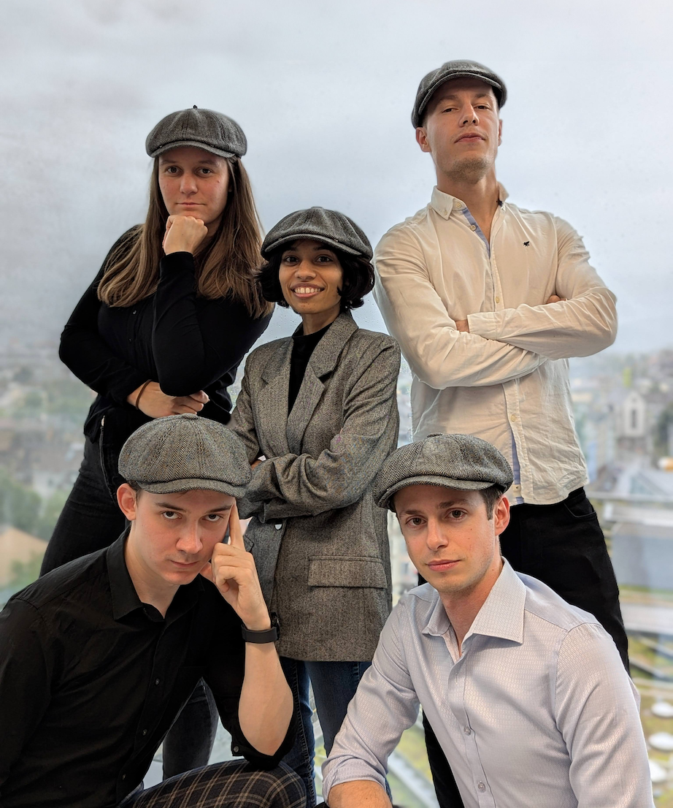

Jay
Janani Durairaj

I’m a project leader working on bringing biochemical context to protein deep learning models, in Torsten Schwede’s Protein Bioinformatics in 3D research group at the Biozentrum, University of Basel. I work at the interface of protein structural bioinformatics and machine learning, developing efficient algorithms and software to represent, explore and understand protein structures for applications such as enzyme engineering, drug discovery and biomedicine.
The Picky Binders team:

Find me on Bluesky as @ninjani.bsky.social
news
| Nov 1, 2024 | Started as an Ambizione Project Leader, bringing biochemical context to protein deep learning models |
|---|---|
| Aug 30, 2024 | Spoke about PLINDER at the Generative AI in Drug Discovery series |
| Apr 9, 2024 | The Protein Universe Atlas was selected as one of the SIB Remarkable Outputs 2023 |
| Sep 13, 2023 | ‘A Pandora’s box’: map of protein-structure families delights scientists |
| Jun 28, 2022 | Winner of the BioSB Young Investigator Award “for a young researcher who has significantly contributed to the bioinformatics or the systems biology research community in the Netherlands.” |
| Nov 6, 2021 | Kickstarted a structural bioinformatics newsletter with the group: FoldedWeekly |
| Sep 15, 2021 | Defended my PhD thesis entitled “Computational approaches to discover novel enzymes for fragrance and flavour”, cum laude! |
| Sep 1, 2021 | Started as a postdoc at the Protein Bioinformatics in 3D research group |
| Jun 30, 2021 | Talked about what I’ll be working on as part of the LIGATE project |